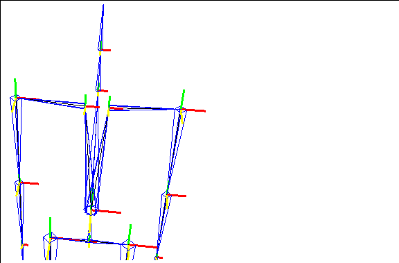
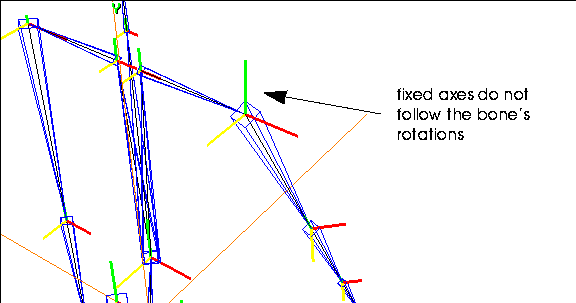

[N-World Contents] [Book Contents] [Prev] [Next] [Index]
Posing a Skeleton
Posing skeletons can be done using either kinematic or inverse kinematic (IK) techniques. You can then use these poses to create pose to pose animations or layer individual poses over motion capture data.
In this Chapter
You'll learn how to:
Posing Skeletons in N-Geometry
Skeletons can be posed using both kinematic and inverse kinematic operations. This section describes how to pose a skeleton kinematically. (Inverse kinematics are described in more detail in "Inverse Kinematics," on page 6-5)
If you want to pose a skeleton kinematically, you select individual bones, rotate, twist, or scale them, then repeat the process for different bones until the skeleton is in the correct pose.
When you animate the skeleton, you specify a starting or "base" pose, a number of intermediate poses, and an ending pose. For frames between poses, the position of the skeleton is averaged.
Pose to pose animation can be used by traditional animators who are used to keyframing techniques; the same concept applies here as it does there. You generate positions for the skeleton at different points in the script; the smoothness between the transitions depend on the amount of space between the two poses and the difference in position for the skeleton in the two delimiting poses.
Kinematic vs. Inverse Kinematic Posing
There are two ways of repositioning a skeleton:
Kinematic poses are simple to execute; you twist or rotate a bone by selecting the bone directly.
Inverse kinematic poses, however, are inherently more complex, since there are nearly an infinite number of ways that a skeleton could move to accommodate the change in position of any single joint. You limit the possible solutions by creating an IK set to restrict the motion of bones into realistic paths.
Posing Kinematically
Kinematic commands manipulate a skeleton in much the same way that you might animate a primitive robot.
If you wanted to pose the wire figure so that he was reaching toward the ground, you might bend him at the waist, then bring the upper arm forward, and finally, bring the forearm and hand into their correct positions.
Figure 6.1 Posing a skeleton using kinematic commands (see Figure 6.2)
To pose a skeleton kinematically, you use the following N-Geometry commands:
These commands are described in the Skeletal Animation System Reference Guide.
Inverse Kinematics
There are two ways of repositioning a skeleton:
Kinematic moves are simple to execute; you modify the position of a bone explicitly,rotating or twisting it, and simply update the position of any joints that need to move to reflect the change in that bone.
Inverse kinematic moves, however, are inherently more complex. There are nearly an infinite number of ways to change the position of a skeleton to accommodate the change in position of any single joint.
Consider the example of a skeleton reaching out for an object:
Figure 6.2 IK move of a wrist joint using different IK sets
This is a typical gesture for which you'd want to use an inverse kinematic move to pose the skeleton; you're moving the skeleton's hand and want the rest of the skeleton to follow "naturally."
But how much of the skeleton? There are any number of ways you can reach out for an object (or kick a ball, or punch into the air). Look at the skeletons in Figure 6.2:
Since all of these are valid moves, you must specify which bones should be "movable" (and around which axes) to perform the IK move. These constraints are defined and stored in an IK set.
- Note. If you try to do an IK operation on a joint that has no IK set, the IK set dialog box appears.
The minimum and maximum angles a bone can rotate, as well as the maximum length for each bone, are controlled by the DOF limits you defined for the skeleton (as described in "Using the DOF Editor," on page 6-19.
This chapter describes the relationship between DOF Limits, IK sets, and IK moves.
You can pose a skeleton using the following IK commands:
These commands are described in the Skeletal Animation System Reference Guide.
Using IK Operations
The various IK Move operation lets you pose a skeleton by selecting one or more end effectors, and moving that joint around in 3D space. One or more bones above the joint are affected in a natural manner to accommodate the new position of the end effector as you change the position of the end effector.
You specify which bones can move and the axes each of those bones can rotate around by creating an IK set.
In Figure 6.3, you can see the difference between an IK Move operation on a wrist joint using two bones (the forearm and upper arm) and the same IK Move operation performed with an IK set that goes all the way to the root:
Figure 6.3 Left, IK Move using two bones; right, IK Move using several bones
To perform an IK operation, you must specify which bones can move in which direction by creating an IK set. In the figure on the right in Figure 6.3, for example, the IK move used an IK set that allowed the chest bone to rotate around the Z axis.
Without a meaningful IK set, IK operations are not very useful. IK sets take a little time to set up, but are purposely left "open" to give you complete control over the behavior of the skeleton.
- Note. It's a good idea to save skeletons for which you've defined appropriate DOF limits and IK sets. That way, you can use the same skeleton over and over in different animations without having to define new DOF limits and IK sets each time.
Defining an IK Set
To perform an IK operation, you must define an IK set. An IK set is nothing more than a list of which bones can be rotated around which axes to complete an IK move.
As shown in Figure 6.2, there are different ways to pose a skeleton; when you drag a wrist joint, should the skeleton move only his forearm? Forearm and upperarm? Or can he move the torso as well? Around which axes? These questions are answered by setting up one or more IK sets to govern the possible solutions for an IK operation.
IK sets are very powerful; they control how a skeleton can be posed or animated using IK operations.
Try this:
1. Load the skeleton primitive.
2. (CLICK-L) on points in the element sensitivity menu.
3. (SHIFT-L) on the wrist joint of the skeleton.
4. (CLICK-L) on IK Move.
- The following dialog box appears:
Figure 6.4 The IK set dialog box
There are three sections in the IK set dialog box:
5. In the middle section, (DRAG-L) the mouse over the X, Y, and Z box next to the TopHip bone and the X and Z box next to the Chest bone:
- You can (CLICK-L) and drag the mouse to toggle the state of individual boxes on the dialog box, or (CLICK-L) on them individually. The boxes named above should be grayed out:
Figure 6.5 Changing the degrees of freedom for the IK set
6. (CLICK-L) on Done.
- The following dialog box appears:
Figure 6.6 Saving the IK set
- The SAS generates a default name for the IK set, which includes the joint for which it was defined.
- How far the bone can rotate around each of those axes is determined by the DOF limits defined for each of those bones. You can view the DOF limits using the DOF Editor.
7. (CLICK-L) on Done to save the IK set.
8. Move the mouse around.
- You may find the skeleton a little "jumpy" or hard to control. That's OK for now; notice, however, that only the bones included in the IK set move. This is most obvious if you look at the chest bone, which only rotates around its own Y axis, regardless of where you move the mouse.
Figure 6.7 An IK Move using a "loose" IK set makes it hard to pose the skeleton
- The IK set is too "loose;" that is, it contains too many degrees of freedom to pose the skeleton with any level of control.
Improving the IK Set
To make the IK Move operation work better, you need to define a better IK set:
9. (CLICK-L) on bodies in the element sensitivity menu.
10. (CLICK-L) on the skeleton.
11. (CLICK-L) on Base.
- The following dialog box appears:
Figure 6.8 Return the skeleton to its base position
12. (CLICK-L) on Done.
- This returns the skeleton to its base position.
13. (CLICK-L) on points in the element sensitivity menu.
14. (SHIFT-L) on the wrist joint again.
15. (CLICK-L) on IK Set.
- A menu listing any IK sets defined for the left wrist appears:
Figure 6.9 Selecting a IK set to edit
- This lets you select an IK set to edit.
- Note. You can have more than one IK set associated with any given joint; however, you must specify which set is to be used to perform an IK operation, either in N-Geometry or N-Dynamics.
16. (CLICK-L) on the IK set you saved in step 6 above.
- The IK set dialog box opens, showing the selected IK set:

Figure 6.10 Editing an existing IK set
- Let's remove some additional degrees of freedom to make the skeleton behave better.
- Your IK set should look like Figure 6.11 after you've made these changes:
Figure 6.11 An improved IK set
17. (CLICK-L) on Done to save the modified IK set.
18. (SHIFT-L) on the wrist joint again.
19. (CLICK-L) on IK Move and pose the skeleton again.
- The modified IK set now controls the wrist joint: the chest rotates around its own Y axis, the collar bone doesn't rotate at all, and the upper arm and forearm rotate in a much more manageable manner:
Figure 6.12 Posing a skeleton with a "tighter" IK set
Renaming IK Sets
Modifying an IK set doesn't change the name of the IK set.
While it may seem desirable for a IK set name to update automatically if you modify it, doing so could cause a different set of headaches later on: IK sets are specified by name when animating skeletons using dynamic IK operations, so if we changed the name of an existing IK set automatically, an animation script wouldn't be able to find the IK set it was looking for.
This means you have three options:
We recommend the first option; it's simple enough to pop open the IK set dialog box to see what degrees of freedom are in effect for the selected IK set, and causes less headache in the long run.
20. (SHIFT-L) on the wrist joint.
21. (CLICK-R) on IK Set.
22. (CLICK-L) on Rename.
23. (CLICK-L) on the IK Set we saved in step 17.
24. Enter a new name for the IK set:
Figure 6.13 Renaming the IK set
25. (CLICK-L) on the Done to rename the IK set.
DOF Limits vs. IK Set
DOF limits are closely related to IK sets, but both control different aspects of a skeleton.
To summarize:
Suppose that you created an IK set for a wrist joint which specified that only the forearm and chest could rotate, and only around their X axes.
If you did an IK operation on the wrist joint, only those two bones would rotate, and only around their X axes to "solve" the IK move. The DOF limits determine how far those two bones could rotate.
Joint Identification-A Quick Way to Define DOF Limits for a Skeleton
Assigning a joint identification to the different joints on a skeleton is an easy way to set up appropriate DOF limits for a skeleton.
While the default skeleton has DOF limits when you create it, some skeletons do not have DOF limits-for example, a skeleton that you create from scratch has no meaningful DOF limits.
To identify a joint:
1. (CLICK-L) on points in the element sensitivity window.
2. (SHIFT-L) on the joint you want to identify.
3. (CLICK-L) on Joint Identification.
- A menu of default joint types is displayed:
Figure 6.14 Assigning a joint type for an end effector
- This menu contains a list of pre-defined joint types. Each of these joint identifications has a set of default DOF limits associated with it; these DOF limits apply to the bone below the joint (further from the root).
The table below shows the default DOF limits assigned to a bone when you make a joint identification:
* The joint type of None lets you remove a joint identification and the saved DOF limits for the selected bone.
Using the DOF Editor
In all the examples of kinematic poses above, we were able to move the individual bones without limitation. However, in order to get the maximum value out of a skeleton, one needs to be able to define certain constraints, or limits for how bones can move.
By properly defining DOF limits for a skeleton, you can better limit how a skeleton can behave during IK moves. Let's take a look at the skeleton primitive, which already has some DOF limits defined:
1. Load the skeleton primitive.
2. (CLICK-L) on bodies in the element sensitivity menu.
3. (SHIFT-L) on the skeleton.
4. (CLICK-L) on DOF Editor.
- The DOF Editor appears:
Figure 6.15 The DOF Editor
- The DOF editor lets you define the limits for any bone on the skeleton. For each bone you can define:
(Meaningful limits may or may not be included with a skeleton read in as part of a motion capture data file.)
If you're building your own skeleton, you should define the constraints for each bone before setting up any poses or trying to perform any IK operations. There are two steps to defining limits for a bone:
Selecting Rotation Axes
Try this:
1. (CLICK-L) on points in the element sensitivity menu.
2. (SHIFT-L) on the skeleton's left wrist joint.
3. (CLICK-M) on IK Move 2D.
4. Move the mouse left and right.
- This normally tries to perform an IK move by rotating the two bones above the wrist joint around their X axes , as shown below:
Figure 6.16 Performing the same IK Move 2D with limits for the upper arm turned on
- Suppose, however, that you want to pose the skeleton without moving the upper arm bone at all? How do you lock it into position?
5. (SHIFT-L) on the selected skeleton or a single bone.
- If you select the entire skeleton, you can modify the limits for one or all bones at the same time.
6. (CLICK-L) on DOF editor.
7. Locate the bone whose limits you want to set.
- For this example, lets use the bone "LeftUpperArm."
8. (CLICK-L) on the text box under RotOrder next to the bone.
- This shows the planes in which movement is allowed; if you loaded the default skeleton, the axes "Z X Y" should appear in this box. In the dialog box that appears, you can (CLICK-L) to highlight which planes a skeleton should be able to move in:
Figure 6.17 Selecting rotation axes
9. (CLICK-L) on the X plane.
10. (CLICK-L) on Do It.
11. (CLICK-L) on Save Changes.
- This saves the changes with the skeleton.
12. (CLICK-L) on Yes when prompted to save changes:
Figure 6.18 Saving limit changes
13. (SHIFT-L) on the skeleton's left wrist joint.
14. (CLICK-M) on IK Move 2D.
15. Move the mouse left and right.
- Now, when you perform the IK move, only the forearm moves, because the upper arm has been restricted from rotating around its own X axis:
Figure 6.19 Setting limits for a bone; note that the left upper arm bone does not move, compared to Figure 6.16
Limiting Range of Motion for a Selected Bone
In the previous section, we learned how to completely restrict the rotation of a bone in one plane. What if we want to partially limit rotation of the bone in one plane? Using the DOF Editor again, we can specify an appropriate range of motion for any bone in any axis.
We can use the skeleton from the previous exercise to try this out:
1. Open the DOF Editor again.
2. Locate the bone whose rotations you want to limit.
- Let's use the bone "LeftUpperArm" again. If you're using the skeleton from the previous exercise (the skeleton primitive), the values -170.0 and 40.0 should appear under the X Min/Max label.
3. (CLICK-M) on the text box to clear the values.
4. Enter the following text in the box:
-20 20
- This specifies the the upper arm can move only twenty degrees in either direction.
5. (SHIFT-L) on the skeleton's left wrist joint.
6. (CLICK-M) on IK Move 2D.
7. Move the mouse left and right.
- Now, when you perform the IK move, both the upper arm and forearm bones move; however, note that the upper arm is severely restricted:
Figure 6.20 Limiting range of motion
You can specify a maximum range of motion for any bone; in this case, the upper arm is limited to a range of -20 to 20 degrees; no matter how you move the wrist joint, the upper arm does not move beyond 20 degrees
Locking Bones
When posing complicated parts of a skeleton (such as a hand) where you want to rotate or pose several bones at once in the same manner, you can "lock" a bone to one of its siblings.
Sibling bones come from the same joint, giving them the same relationship to each other with respect to the root.
We'll show you what we mean using a sample object:
1. Load the following object:
/usr/local/ngc/demo/objects/hand.geo
- The hand looks like this:

Figure 6.21 Sample hand bone (with sibling bones)
2. (CLICK-L) on segments in the element sensitivity menu.
- Move the cursor over the various bones; note that we've named all the bones attached to the wrist joint index_1, middle_1, and so on. These are all sibling bones-they are attached to the same joint, and have the same orientation and distance from the root.
3. (SHIFT-L) on the index_1 bone.
4. (CLICK-L) on Lock Bone.
- A list of sibling bones for the selected bone is displayed.
5. (SHIFT-L) on middle_1.
6. (CLICK-L) on XYZ Rotate.
- Move the mouse left and righ. The bones move in unison, as if they were locked together:
Figure 6.22 Locked bones move in unison
You can use the Lock Bone command to move several bones the same amount without having to line up each bone over and over. It's possible to lock a bone to more than one other bone; however, in an example like the hand above, it's probably easier to pick one bone you want to attach the other sibling bones to rather than locking them in a chain (each to the bone next to it).
The lock bone feature is particularly powerful when used with the Pose Editor, described below.
Unlocking a Bone
To unlock a bone that has been locked:
1. (SHIFT-L) on the bone.
2. (CLICK-M) on Lock Bone.
3. Select the bone(s) you want to unlock this bone from.
Saving Poses
Once skeletons are in the position you want, you can save the skeleton as a pose. By creating a number of poses, you can generate an animation.
Let's create and save several poses for a skeleton:
1. Load the skeleton primitive.
2. (SHIFT-L) on the left upper arm.
3. (CLICK-R) on XYZ Rotate.
- Raise the skeleton's arm above its head, then repeat the process with the right arm, so that it looks like this:
Figure 6.23 Pose the skeleton
4. Select bodies from the element sensitivity menu.
5. (SHIFT-L) on the skeleton.
6. (CLICK-M) on Pose.
- You want to save the current position as a pose. The following dialog box appears:

Figure 6.24 Saving a pose
7. (CLICK-M) on the text edit box next to Pose name and enter a more descriptive name for the pose.
Figure 6.25 Naming a pose
8. (CLICK-L) on Done after you've named the pose.
9. (SHIFT-L) on the skeleton.
10. (CLICK-L) on Base.
- The following dialog box appears:
Figure 6.26 Saving a pose
11. (CLICK-L) on Done.
- The skeleton returns to its original pose.
- Note. A skeleton generated from the N-Geometry menu (or by reading in a motion capture file) has a "base state" associated with it.
12. (SHIFT-L) on the skeleton again.
13. (CLICK-L) on Pose.
- A menu appears, listing any poses that have been saved with the currently selected skeleton.
Figure 6.27 Selecting a pose
14. (CLICK-L) on arms-up.
15. Drag the mouse slowly from left to right.
- The skeleton goes from its current position toward the named pose; if you continue to move the mouse, the skeleton continues to move beyond the saved pose (extrapolating as you continue to move the mouse).
16. (CLICK-L) to move the skeleton to its new position, or (CLICK-R) to abort the changes.
This process can be repeated over and over to save multiple poses, which can be used later when animating the skeleton.
The various pose operations are described in more detail in the SAS Reference Manual.
Viewing Saved Poses
Moving the Skeleton to a Saved Pose
To move the skeleton to a saved pose:
1. (SHIFT-L) on the skeleton.
2. (CLICK-L) on Pose.
- A menu with any saved poses for the skeleton is displayed:

Figure 6.28 Moving the skeleton to a selected pose
3. (CLICK-L) on the pose you want to move the skeleton toward.
4. Move the mouse left to right to animate the skeleton toward the selected pose.
(SHIFT-L) animates the skeleton to the selected pose but does not update the attached skins.
(CTRL-L) on Pose to go directly to a pose. Specify a value of 1.0 in the dialog box that appears to view the actual saved pose; a value between 0 and 1 specifies a point between the base state and the pose.
A Sample Skeleton with Saved Poses
A skeleton with three poses has been saved in the following location:
/usr/local/ngc/demo/objects/skeleton-3-poses.geo
Aligning Bone Axes
Each bone has a local axis associated with it, and that each axis is color coded:
When animating, it's typically desirable that all the axes on the same limb have the same local axes from the root to the end of the limb. However, it's possible to build a skeleton in such a way that some limbs have local axes aligned differently.
If you build your skeletons correctly, or if you import premade skeletons, you probably won't need to modify the rotation axes of any bones.
"Mirroring" Bones
Realigning the axes is also useful if you want to pose corresponding bones on both sides of a skeleton at the same time (for example, if you wanted to define poses for a bird where you moved the wings in unison).
- Note. Changing the rotation axes for bones on skeletons that have been read in as part of a motion capture data file can cause the motion data to be applied "incorrectly" when animated.
Try this:
1. Load the skeleton primitive.
- Take a close look at the local bone axes at the base of each bone frame; note that they all have the same orientation.

Figure 6.29 All the axes on the skeleton are oriented the same way
2. (CLICK-R) on segments in the element sensitivity menu.
3. (CLICK-L) on the two collar bones, then (CLICK-R) to finish the collection.
4. (SHIFT-L) then (CLICK-M) on XYZ Rotate.
- The two collar bones move in the same direction around their local axes; however, you want them to move in a "mirrored" fashion.
Figure 6.30 Rotating corresponding bones without modifying the bone axes
5. (SHIFT-L) on the left collar bone.
6. (CLICK-L) on Align/Rotate Axes.
- This lets you define the local axes orientation for the selected bone. The following dialog box appears:
Figure 6.31 Choosing an alignment axis for a bone
7. (CLICK-L) on -X.
- Notice that the local axes for the bone changes.
8. Collect the two collar bones again.
9. (SHIFT-L) then (CLICK-M) on XYZ Rotate.
Figure 6.32 After modifying the orientation of the local bone axes, you can pose both sides of a skeleton in the same way
Rotating vs. Fixed Bone Axes
You may have noticed that in all the example so far, that the bone axes have followed the motion of the bone. If you rotate the bone, the axes at the base of the bone rotates likewise. If you want, you can specify that the bone axes remain fixed (usually oriented in the same manner as the global axes) so that any bone rotations take place around an X, Y, or Z axis that corresponds to the global one.)
The question of whether bone axes should rotate or remain fixed varies depending on which motion capture standard you employ. The skeletal animation system supports both rotating and fixed axes.
- Note. You cannot mix and match rotating and fixed bone axes on a skeleton.
To change the state of a skeleton's bone axes:
1. Load the following skeleton:
- /usr/local/ngc/demo/biovision/WalkGoofy.bvh
2. Look at the bone axes at the base of each bone.
- Note that at this point they are aligned with the global axes; the red axis is the positive X, green positive Y, and yellow positive Z.
Figure 6.33 Typically, bone axes are aligned with the global axes in the skeleton's base position
3. (SHIFT-L) on the left upper arm and (CLICK-L) on Rotate/Twist.
- Pay special attention to the bone axes for that bone:
Figure 6.34 With rotating axes, bone axes follow the rotations of the bone
- Note that the bones (and the bone axes) below the bone being modified are also updated.
4. (SHIFT-L) on the Upper Arm bone.
- Look at the description that appears in the upper left corner of the Nichimen Geometry window:
Figure 6.35 Bone description
- The description shows the following information:
5. Look at the description again.
- Note that the rotation order is (Z X Y). This means that when you rotate this bone (e.g. in an N-Dynamics script), the Z rotation is applied first, the X rotation second, and finally the Y rotation (which is the "twist" axis that follows the bone.
- With rotating axes, the bone should be rotated around the twist axis last.
6. (CLICK-L) on bodies in the element sensitivity menu and (SHIFT-L) on the skeleton.
7. (CLICK-R) on Bone Display/Axes.
- The following dialog box is displayed:
Figure 6.36 Fixing axes dialog box
8. (CLICK-L) on Yes.
9. (SHIFT-L) on the left upper arm again.
10. (CLICK-L) on Rotate/Twist.
- Now when you rotate or twist the bone, the rotation axes remain fixed:

Figure 6.37 Rotating a bone with fixed axes
Changing from fixed to rotating axes requires a change in rotation order to generate the same motion; the SAS reorders the axes automatically.

Figure 6.38 Rotating a bone with fixed axes
With fixed axes, rotations along the bone axis should be done first instead of last; note that the new rotation order is (Y X Z); the Y rotation for this bone will now be applied first when animating it in an N-Dynamics script.
Some animators prefer to work with fixed bone axes, other with rotating axes; the Skeletal Animation System lets you work equally with either.
Motion Capture Supplier Preferences
Different motion capture vendors have different preferred methods of setting up a skeleton.
The Skeletal Animation System lets you switch from fixed to rotating bone axes (or back) freely, modifying the rotation order for bones appropriately and automatically.
Animating the Root Node in N-Dynamics
In addition to using IK to pose the skeleton interactively, there are several operations in N-Dynamics that let you rotate, transform, or translate the skeleton from within an N-Dynamics script:
Rotate Root
For the root of the skeleton, lets you specify:
Translate Root
For the root of the skeleton, lets you specify:
Transform Root
For the root of the skeleton, lets you specify:
When to Use These Operations
These operations are useful under a number of conditions:
These operations are described in more detail in the Skeletal Animation System Reference Guide.
Congratulations!
You've now learned to use most of the posing commands in the Skeletal Animation System, use the DOF Editor to define degrees of freedom (range of motion) for a skeleton, lock bones to one another, and modify bone axes between fixed and rotating.
[N-World Contents] [Book Contents] [Prev] [Next] [Index]
 Another fine product from Nichimen documentation!
Another fine product from Nichimen documentation!
Copyright © 1996, Nichimen Graphics Corporation. All rights
reserved.